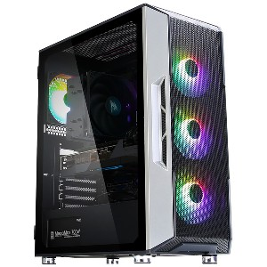
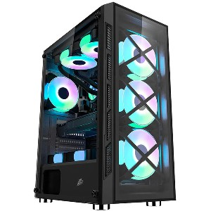
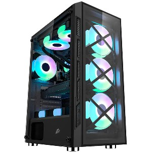
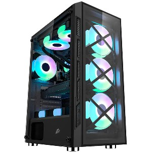

Почему наши готовые ПК так хороши?
Мы делаем производительные и качественные ПК в соответствии цены, широкий выбор.
Если по долгу службы или по зову сердца вы колесите по городам и весям — без ноутбука не обойтись.
В противном случае следует выбрать стационарный ПК. Разберем несколько типичных случаев.
Стоимость ПК на 20–25 % меньше, чем у ноутбука. Сэкономив 1/5 бюджета, можно собрать современный мощный ПК с хорошей видеокартой и большим монитором.
Самая бюджетная сборка ПК обошлась в 21 000 рублей, из которых 25 % — это монитор.
Широкий выбор системников на любой вкус

 


Сотрудничаем с крупными компаниями
Такие как:
NVIDIA,
AMD,
Intel,
MSI,
и другие возможновы слышали Dell считается компанией ИТ с самым большим доходом в мире.
Ее годовая прибыль составляет $108 млрд., а количество клиентов по всему миру превышает отметку в 10 млн.
Интересно, что почти 99% компаний из рейтинга Fortune 500 сотрудничают с этим "айти" гигантом.